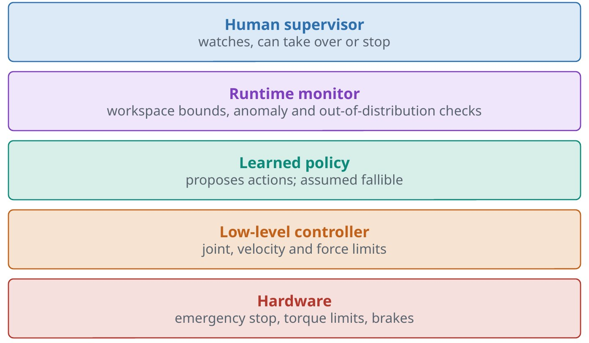
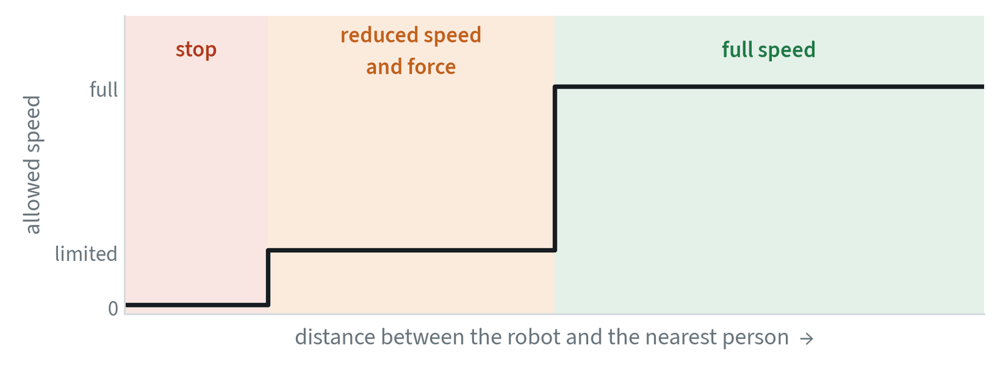

Looking inside the model
These are tools for asking what a model has learned. They suggest hypotheses. An ablation or a controlled test confirms them.
| Tool | What it does | How far to trust it |
|---|---|---|
| Probing | Trains a small classifier on internal features. If it can read out object position, the model encodes it. | A cheap first check of what a layer knows |
| Attention and saliency maps | Show which pixels or tokens influenced an output. | Good for spotting shortcuts; suggestive, not proof |
| Sparse autoencoders | Decompose activations into many simple features, each often with a readable meaning. | An active research area |
| Ablation | Removes or zeroes a component, or masks an input such as one camera, and measures the change. | The most direct causal evidence |
Knowing when not to trust it
A policy facing an unfamiliar scene should slow down or stop, and to do that the system has to notice.
- Uncertainty. Estimate how sure the model is, with an ensemble, by sampling several outputs, or with calibrated confidence scores. This lets the system ask for help.
- Out-of-distribution detection. Flag inputs unlike the training data, for example by comparing their embeddings with those seen in training, and trigger a safe stop or a human check.
Physical safety sits outside the model
A learned policy will sometimes be wrong, so safety has to be enforced outside it.


- Defence in depth. Use several independent layers, each able to stop the robot.
- Lower layers are simpler. Limits in firmware and hardware are far easier to verify than a neural network.
- Fail safe. On lost communication or stale commands, stop.
- Limit energy. Cap speed and force near people. Collaborative robots are built for this.
- Test the stop. Exercise the emergency stop regularly, and make sure new team members know where it is.
Never rely on the policy to be safe. Put hard limits underneath it and a human above it, and run any policy under test at reduced speed first.
The standards
Robot safety is governed by published standards, and a learned policy does not change which ones apply.
| Standard | Covers |
|---|---|
| ISO 12100 | How to assess and reduce risk for any machine |
| ISO 10218, parts 1 and 2 | Industrial robots and the systems built around them. The 2025 edition includes the requirements for working alongside people. |
| ISO/TS 15066 | Collaborative operation, including limits on force and pressure in contact with a person. Its content was folded into the 2025 edition of ISO 10218. |
| ISO 13482 | Personal care robots, including mobile and wearable ones |


The two approaches most used for shared spaces are in this family. Speed and separation monitoring slows and then stops the robot as a person approaches. Power and force limiting lets contact happen and keeps it below levels that cause harm. Both are enforced by certified safety hardware, below the learned policy and independent of it. This table is an orientation, not compliance advice.
Predicting failure at run time
A policy does not announce that it is about to fail, and separate monitors are used to notice.
- Consistency of its own plans. Successive action chunks that disagree sharply suggest the policy is unsure.
- Distance from the training data. Compare the embedding of the current image with those seen in training.
- A second model as observer. A vision-language model asked “is the task progressing?” at intervals.
- Plain limits. A time limit per sub-task, and a count of retries.
When a monitor fires, the response is to slow down, stop, or ask a person. Monitors raise false alarms, so measure how often on normal runs before relying on one.
Instructions are an attack surface
A robot that follows language can be told to do the wrong thing, by a person or by text in its camera view. A printed sign reading “ignore previous instructions” is an input like any other. The defences are structural: limit the tasks a robot will accept to an approved list, require confirmation for anything risky, and keep the physical limits where no instruction can reach them.
Common mistakes
- Treating a saliency map as an explanation. It shows where the model looked, not why it decided.
- Trusting raw confidence. Uncalibrated scores can be high on inputs the model has never seen.
- Putting safety in the policy. A constraint the network learned is a tendency, not a guarantee.
Terms
- Ablation
- Removing a component to measure its effect.
- Calibration
- Agreement between stated confidence and actual accuracy.
- Out of distribution
- Unlike the data the model was trained on.
- Emergency stop
- A hardware control that cuts power to motion.
- Speed and separation monitoring
- Reducing a robot’s speed as a person gets closer, and stopping it at a set distance.
- Power and force limiting
- Designing and controlling a robot so that contact with a person stays below harmful levels.